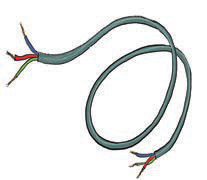
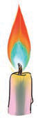
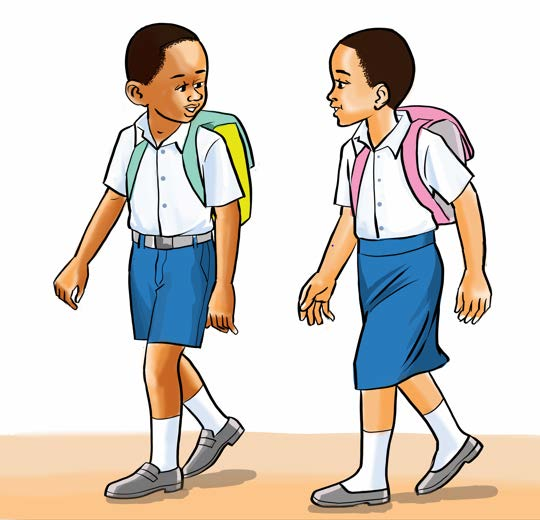

9. Soma sentensi hizi:
Wazazi wake ni wema.
Watoto wote wanasoma.
Weka waya wima.
Wakati ni mali.
Wape watu wote wali.
Watoto wote wamekuja.
Wazazi walete zawadi.
10. Soma maneno yaliyopo chini ya picha hizi:

waya

waka
11. Soma habari hii:

Wema na Kilewa ni watoto wa Mzee Mawele. Watoto hawa wanajua kusoma. Wote wawili wana adabu na bidii ya masomo. Wema na Kilewa wanataka kuwa walimu. Walimu wote wanafurahia juhudi zao.